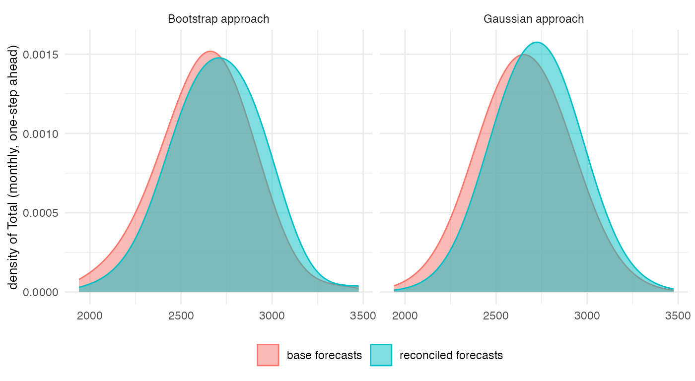
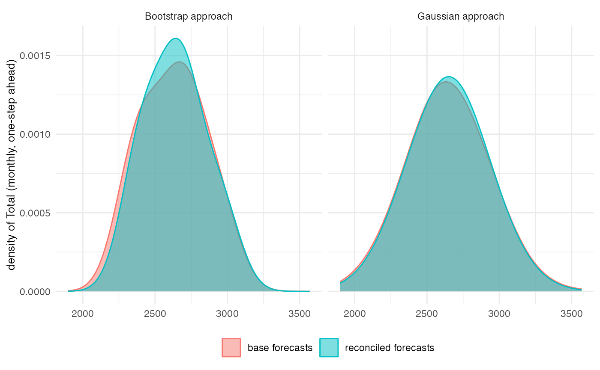
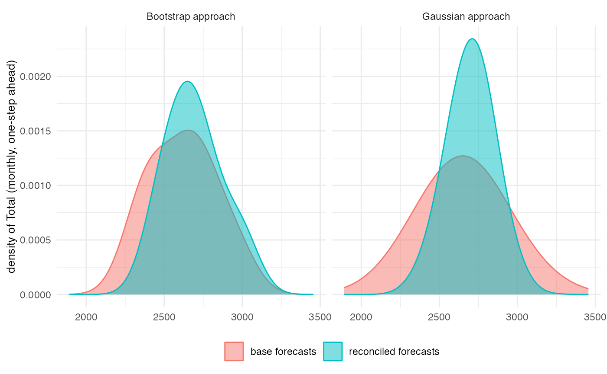

Probabilistic forecast reconciliation is a powerful technique for
generating coherent and accurate forecasts across multiple time series.
FoReco is an R package that provides an implementation of
this technique, using the methods proposed by Panagiotelis et al. (2022)
and Girolimetto et al. (2023). The package is flexible and can be used
to perform reconciliation on cross-sectional, temporal, and
cross-temporal data. It also allows for the specification of constraints
and can handle both point and probabilistic forecasts. In this vignette,
we will walk through the basics of using FoReco for
probabilistic forecast reconciliation.
Let’s take a look at how FoReco can be used for
cross-sectional reconciliation. We begin by considering an example of
cross-sectional reconciliation. Suppose we have data (UKLungDeaths
dataset) on the monthly deaths from bronchitis, emphysema and asthma in
the UK, 1974–1979 (Diggle, 1990), both sexes (Total),
males (Male) and females (Female). We
want to generate forecasts for these variables, but we also want to
ensure that the forecasts are consistent with each other.
We start with the example of cross-sectional reconciliation, where we
want to reconcile base forecasts for the total, males’ and females’
number of deaths such that \(Total = Male +
Female\). We first arrange the data frame of deaths, the
aggregation matrix, and the constraint matrix. Then, we generate the
base forecasts using the ets()
(ETS model) and forecast()
function from the forecast
package.
# Cross-sectional setup
tdeaths <- mdeaths + fdeaths
agg_mat <- t(c(1,1))
cons_cs <- cbind(1,-agg_mat)
lungDeaths <- cbind(tdeaths, mdeaths, fdeaths)
fit <- apply(lungDeaths, 2, function(x) ets(ts(x, frequency = frequency(lungDeaths))))
forecast_obj <- lapply(fit, forecast, h=12) # forecast object
base <- sapply(forecast_obj, function(x) x$mean) # base mean
res <- sapply(fit, residuals, type='response') # in-sample residuals (one-step)The first approach is the block bootstrap method proposed by
Panagiotelis et al. (2022). To implement this method, we utilize the
boot_cs() function, which requires three inputs. Firstly,
the fit parameter, which is a list of models (e.g.,
three ETS models). Secondly, the boot_size parameter
specifies the number of boostrap replications, and lastly,
h denotes the block size, which is typically equivalent
to the forecast horizon. It is important to note that the models used
have the simulate()
function available and implemented similarly to the forecast
package (Hyndman et al. 2023) version, with the following mandatory
parameters: object, innov,
future, and nsim. The outputs of the
function are the seed used to sample the errors and a 3-d array (\(\mathrm{boot\_size} \times n \times h\)),
which can be reconciled using the htsrec() function.
# Base forecasts' sample
base_csjb <- boot_cs(fit, B, 12)$sample
norm(apply(base_csjb, 3, function(x) x%*%t(cons_cs))) # Check the coherency
#> [1] 123458
# Reconciled forecasts' sample
reco_csjb <- apply(base_csjb, 3, htsrec, C = agg_mat, res = res,
comb = "shr", keep = "recf", simplify = FALSE)
reco_csjb <- simplify2array(reco_csjb)
rownames(reco_csjb) <- NULL
norm(apply(reco_csjb, 3, function(x) x%*%t(cons_cs))) # Check the coherency
#> [1] 1.214175e-10To obtain the base forecasts sample assuming Gaussianity
(Panagiotelis et al. 2022), we can use packages to simulate from a
multivariate normal distribution such as MASS
(Venables and Ripley 2002) and then apply the htsrec()
function to obtain the reconciled sample. When we have multiple forecast
horizons, Girolimetto et al. (2023) suggest using multi-step residuals
instead of only one-step residuals.
# Multi-step residuals
hres <- lapply(1:12, function(h)
sapply(fit, residuals, type='response', h = h))
# List of H=12 covaraince matrix (one for each forecast horizon)
cov_shr <- lapply(hres, function(r) shrink_estim(r)$scov)
# Base forecasts' sample
base_csg <- lapply(1:12, function(h) MASS::mvrnorm(n = B, mu = base[h, ], Sigma = cov_shr[[h]]))
base_csg <- simplify2array(base_csg)
sum(abs(apply(base_csg, 3, function(x) x%*%t(cons_cs)))) # Check the coherency
#> [1] 1211926
# Reconciled forecasts' sample
reco_csg <- apply(base_csg, 3, htsrec, C = agg_mat, res = res, comb = "shr", keep = "recf", simplify = FALSE)
reco_csg <- simplify2array(reco_csg)
rownames(reco_csg) <- NULL
sum(abs(apply(reco_csg, 3, function(x) x%*%t(cons_cs)))) # Check the coherency
#> [1] 1.047084e-09
Girolimetto et al. (2023) hanno proposto una generalizzazione del lavoro di Panagiotelis et al. (2022) per la riconciliazione probabilistica al caso temporale e cross-temporale. Assumiamo quindi di voler ottenere le previsioni ricocniliate mensili, trimestrali e annuali per il numero totale di morti.
# Temporal setup
y <- tdeaths
m <- 12
kset <- c(12, 3, 1)
kset <- setNames(kset, paste0("k", kset))
cons_te <- thf_tools(m = kset)$Zt
temp_y <- lapply(kset, agg_ts, x = y) # Aggregated time series list
fit <- lapply(temp_y, function(x) ets(ts(x, frequency = frequency(x))))
forecast_obj <- lapply(fit, function(tsfit)
forecast(tsfit, h=frequency(tsfit$x))) # forecast object
base <- sapply(forecast_obj, function(x) x$mean) # base mean
res <- Reduce("c", sapply(fit, residuals, type='response')) # in-sample residuals (one-step)The boot_te() function is used to generate a bootstrap
sample for time-series forecasts while keeping a temporal structure. The
function has the same inputs as the equivalent cross-sectional
boot_cs(), with an additional parameter m
which indicates the maximum order of temporal aggregation. The length of
the block bootstrap is determined by both m and
h, where h refers to the forecast
horizons for the most temporally aggregated series.
# Base forecasts' sample
base_tejb <- boot_te(fit, B, m = kset)$sample
sum(abs(base_tejb%*%t(cons_te))) # Check the coherency
#> [1] 797123.7
# Reconciled forecasts' sample
reco_tejb <- t(apply(base_tejb, 1, function(boot_base){
thfrec(boot_base, m = kset, res = res, comb = "wlsv", keep = "recf")}))
sum(abs(reco_tejb%*%t(cons_te))) # Check the coherency
#> [1] 4.35648e-09For the Gaussian approach (Girolimetto et al. 2023), the idea is very
similar to what we saw previously. In this case, to calculate the
covariance matrix of the base forecasts, we can use multi-step residuals
organized in matrix form through the residuals_matrix()
function.
# Multi-step residuals
hres <- lapply(fit, function(mod)
lapply(1:frequency(mod$x), function(h)
residuals(mod, type='response', h = h)))
hres <- Reduce("c", lapply(hres, arrange_hres))
# Re-arrenge multi-step residuals in a matrix form
mres <- residuals_matrix(hres, m = kset)
# Base forecasts' sample
base_teg <- MASS::mvrnorm(n = B, mu = unlist(base), Sigma = shrink_estim(mres)$scov)
sum(abs(base_teg%*%t(cons_te))) # Check the coherency
#> [1] 2929280
# Reconciled forecasts' sample
reco_teg <- t(apply(base_teg, 1, thfrec, m = kset, comb = "wlsv", res = res, keep = "recf"))
sum(abs(reco_teg%*%t(cons_te))) # Check the coherency
#> [1] 3.728587e-09
# Cross-temporal setup
ctlungDeaths <- lapply(kset, agg_ts, x = lungDeaths) # Aggregated multivariate time series list
fit <- lapply(ctlungDeaths, function(tsk)
apply(tsk, 2, function(x) ets(ts(x, frequency = frequency(tsk)))))
forecast_obj <- lapply(fit, function(fitk) # forecast object
lapply(fitk, function(tsfit)
forecast(tsfit, h=frequency(tsfit$x))))
base <- sapply(forecast_obj, function(fmodk) # base mean
sapply(fmodk, function(x) x$mean))
res <- Reduce("rbind", sapply(fit, function(fitk) # in-sample residuals (one-step)
sapply(fitk, residuals, type='response')))
# Base forecasts' sample
base_ctjb <- boot_ct(fit, B, m = kset)$sample
sum(abs(sapply(base_ctjb, function(x) x%*%t(cons_cs))))
#> [1] 922277
sum(abs(sapply(base_ctjb, function(x) sum(abs(cons_te%*%x)))))
#> [1] 1980608
# Reconciled forecasts' sample
reco_ctjb <- lapply(base_ctjb, function(boot_base){
octrec(t(boot_base), m = kset, C = agg_mat, res = t(res), comb = "bdshr", keep = "recf")})
reco_ctjb <- lapply(reco_ctjb, function(x) `rownames<-`(t(x), NULL))
sum(abs(sapply(reco_ctjb, function(x) x%*%t(cons_cs))))
#> [1] 4.825381e-09
sum(abs(sapply(reco_ctjb, function(x) sum(abs(cons_te%*%x)))))
#> [1] 7.033407e-09
# Multi-step residuals
hres <- lapply(fit, function(fitk) # in-sample residuals (one-step)
lapply(1:frequency(fitk$tdeaths$x), function(h)
sapply(fitk, residuals, type='response', h = h)))
hres <- t(Reduce("rbind", lapply(hres, arrange_hres)))
# Re-arrenge multi-step residuals in a matrix form
mres <- residuals_matrix(hres, m = kset)
# Base forecasts' sample
base_ctg <- MASS::mvrnorm(n = B, mu = residuals_matrix(t(Reduce("rbind", base)), m = kset),
Sigma = shrink_estim(mres)$scov)
base_ctg <- apply(base_ctg, 1, function(x) matrix(x, ncol = 3), simplify = FALSE)
sum(abs(sapply(base_ctg, function(x) x%*%t(cons_cs))))
#> [1] 5015786
sum(abs(sapply(base_ctg, function(x) sum(abs(cons_te%*%x)))))
#> [1] 5966849
# Reconciled forecasts' sample
reco_ctg <- lapply(base_ctg, function(boot_base){
octrec(t(boot_base), m = kset, C = agg_mat, res = t(res), comb = "bdshr", keep = "recf")})
reco_ctg <- lapply(reco_ctg, function(x) `rownames<-`(t(x), NULL))
sum(abs(sapply(reco_ctg, function(x) x%*%t(cons_cs))))
#> [1] 5.563948e-09
sum(abs(sapply(reco_ctg, function(x) sum(abs(cons_te%*%x)))))
#> [1] 9.904568e-09
Girolimetto, D., Athanasopoulos, G., Di Fonzo, T., & Hyndman, R. J. (2023), Cross-temporal Probabilistic Forecast Reconciliation, https://doi.org/10.48550/arXiv.2303.17277 .
Hyndman R, Athanasopoulos G, Bergmeir C, Caceres G, Chhay L, O’Hara-Wild M, Petropoulos F, Razbash S, Wang E, Yasmeen F (2023). forecast: Forecasting functions for time series and linear models . R package version 8.20, https://pkg.robjhyndman.com/forecast/.
Panagiotelis, A., Gamakumara, P., Athanasopoulos, G. & Hyndman, R. J. (2023), Probabilistic orecast reconciliation: Properties, evaluation and score optimisation, European Journal of Operational Research 306(2), 693–706.
Venables, W. N. & Ripley, B. D. (2002), Modern Applied Statistics with S, fourth edn, Springer, New York. ISBN 0-387-95457-0.